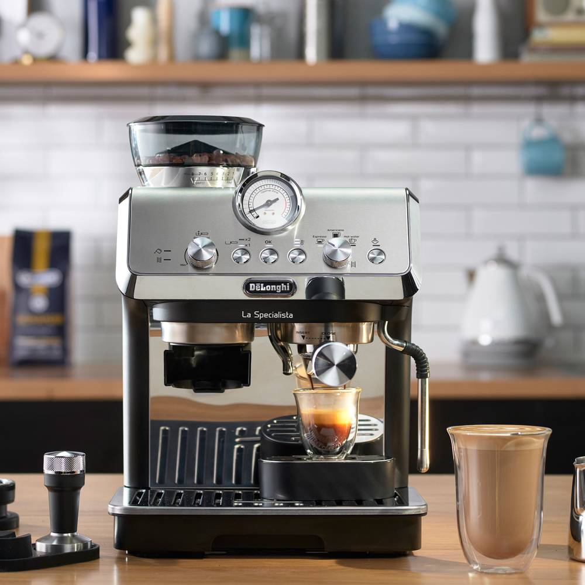

A malfunctioning coffee machine can ruin your day. Whether it’s not brewing, leaking, making strange noises, or refusing to turn on — MyFixer provides fast, reliable, and professional coffee machine repair services.
From Centurion to Pretoria, we help local homes, offices, and businesses get their espresso and bean-to-cup coffee machines working again quickly.
Our certified technicians accurately diagnose problems and fix them the first time. We service espresso machines, drip coffee machines, capsule machines, and commercial coffee machines from all major brands.